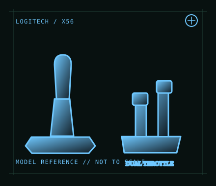

[ JOYSTICK CONTROLLERS // IDENTIFIED COMPONENT ]
Logitech G X56 H.O.T.A.S.
Dual-unit PC HOTAS with configurable stick, split throttle levers, lighting and a broad control set.

MODEL IDENTIFICATION: Logitech G X56 H.O.T.A.S.; regional retail SKU 945-000059. Check the underside label and revision. Published family specifications may not establish the revision or condition of an individual unit; compare its label and included parts with the linked documentation.
Model specifications
| Catalog subcategory | Joystick controllers |
|---|---|
| Exact model / identifier | Logitech G X56 H.O.T.A.S.; regional retail SKU 945-000059. Check the underside label and revision. |
| Design and controls | Separate stick and throttle with independent dual throttle levers, multiple axes, hats and programmable controls. It includes RGB lighting and interchangeable spring options; exact bundle and software behavior depend on the production revision. |
| Physical interface | The stick and throttle each connect to the host by USB, so reserve two working USB ports and connect both units directly when diagnosing power or enumeration issues. PC joystick/HOTAS; no official console support. |
| Host compatibility | Windows PC flight simulation is the intended platform. Logitech software availability and support vary by Windows release; macOS/Linux and console compatibility are not promised by the manufacturer. |
| Driver and configuration | Consult Logitech’s X56 support and user guide for currently offered setup software. Windows can expose basic controller input, while advanced programming, lighting and profiles may need Logitech software; validate current driver compatibility before deployment. |
Setup and control mapping
Map stick pitch/roll and twist, throttle levers independently for twin-engine or split-brake tasks, and reserve hats/buttons for views, trim and systems. Calibrate both throttles separately and ensure a game is not treating the two USB units as duplicate controllers.
Before use, connect the device directly to the stated host, confirm it appears once in the operating system’s controller list, and test every axis and button. Keep host calibration separate from in-game dead-zone and sensitivity settings so later maintenance can reproduce the baseline.
Preservation and service notes
Use separate strain-relieved USB leads; avoid unpowered hubs during troubleshooting. Record spring choice, stick tension, throttle friction and lighting/profile settings. Test all axes at full travel and check the throttle detent and idle zones.
Revision caveat: The X56 requires two host connections and profile-specific setup. Reports of power or USB issues can be host-port dependent; a powered hub may help only after direct-port operation and cable integrity are tested.
For a physical archive entry, record the as-found label, serial/part number where present, accessories, host OS, driver or firmware version, and test method. Separate observed condition from published specifications.
References and support
- X56 Space/Flight VR Simulator Controller — Logitech GManufacturer product page describing the X56 HOTAS set.
- X56 H.O.T.A.S. user guide — LogitechManufacturer user guide for connection, setup and controls.
Vendor pages and downloads can be revised or retired. Preserve the applicable manual locally and note its revision; use the exact product label when choosing firmware or drivers.